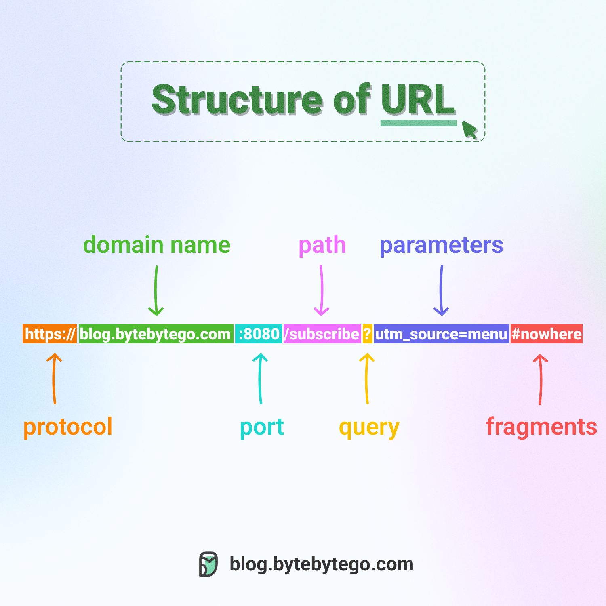

Topic 01
Understanding URL Structure
A URL is made up of different components. Some are common in most web addresses, while others are optional and depend on the resource.
Example URL
https://example.com:8080/folder/page.html?search=url#top
This example shows how a URL can contain a scheme, host, port, path, query, and fragment.

Main Components
| Component | Example | Purpose |
|---|---|---|
| Scheme | https |
Identifies the protocol used to access the resource. |
| Host | example.com |
Identifies the host the browser contacts. |
| Port | :8080 |
Specifies a network port when included. |
| Path | /folder/page.html |
Identifies a resource or route on the host. |
| Query | ?search=url |
Can pass additional information to the resource. |
| Fragment | #top |
Can identify a section within a page. |
Absolute and Relative URLs
An absolute URL includes the full address, including its scheme and host. A relative URL leaves out some of that information and is interpreted using the current page as a starting point.
Absolute URL
https://example.com/pages/help.html
Includes the scheme and host.
Relative URL
/pages/help.html
Uses the current site's address as a starting point.